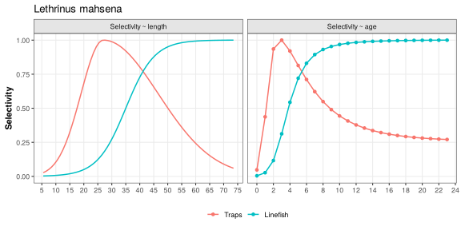
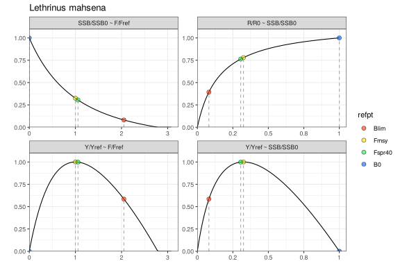
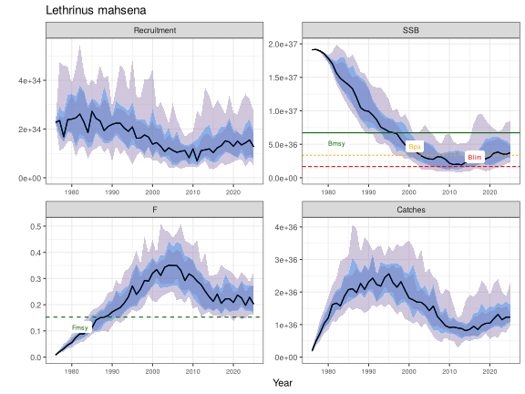
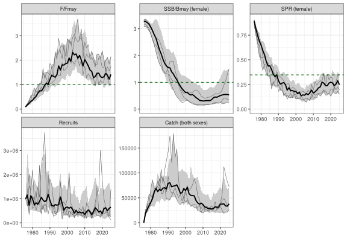

Building an operating model with FLife and FLRef
Source:vignettes/floss-07-om-flife-flref.Rmd
floss-07-om-flife-flref.RmdThis guide builds an age-structured operating model (OM) step by step
from life-history parameters with FLife (equilibrium
stock), FLRef (gear selectivity at length, reference
points, F histories, catch by gear and length sampling) and
FLasher (projection). It is what
build_om() in FLOSS does behind the scenes, written out so
each step can be checked and changed.
The example is the Mahsena emperor (Lethrinus mahsena) from the FLOSS species library, caught by traps (dome-shaped selectivity) and linefish (logistic); there is no survey. The last section builds a sex-structured population with a trawl fishery and a survey, as needed to test sex-structured length-based assessments.
Life history
The species specification gives the von Bertalanffy growth, length-weight, maturity, maximum age, natural mortality and steepness:
sp <- load_species("lethrinus_mahsena")
lh <- sp$lh
unlist(lh[c("linf", "k", "t0", "a", "b", "tm", "tmax", "M", "s")])
#> linf k t0 a b tm tmax
#> 60.1108000 0.1925000 -0.1000000 0.0100000 3.0400000 3.8501000 23.0000000
#> M s
#> 0.3200858 0.6470000FLife::lhPar() completes the parameter set and
lhEql() builds the equilibrium stock over ages 0 to
tmax (plus group). M is set constant and maturity at age is
logistic around the age at 50% maturity:
lhpars <- lhPar(FLPar(linf = lh$linf, k = lh$k, t0 = lh$t0, a = lh$a, b = lh$b,
a50 = lh$tm, s = lh$s, m1 = lh$M))
eql <- lhEql(lhpars, range = c(min = 0, max = lh$tmax, minfbar = 1,
maxfbar = lh$tmax - 1, plusgroup = lh$tmax))
m(eql)[] <- lh$M
mat(eql) <- newselex(mat(eql), FLPar(S50 = lh$tm, S95 = lh$tm * 1.1, Smax = 1000,
Dcv = 0.5, Dmin = 0.1))
mat(eql)[1, ] <- 0
ages <- an(dimnames(m(eql))$age)Gear selectivity in length
Selectivity is defined in length for each gear and integrated over
the length distribution at each age (normal around the growth curve with
CV grid$cv): \(s_{g,a}=\sum_l
P(l\mid a,t)\,s_g(l)\). FLRef::build_gear() returns,
for each gear, selectivity at length and at age, its share of F
(f_mult, a share of Fbar), the capture-conditioned
age-length key \(P(l\mid a,g)\) used
for length sampling, and the sampling design (ess_age,
ess_len: stage-1 and stage-2 effective sample sizes).
gears <- build_gear(list(
Traps = list(type = "dnormal", Lpeak = 27, sd_left = 8, sd_right = 19.6,
f_mult = 0.3, ess_age = 50, ess_len = 300),
Linefish = list(type = "logistic", L50 = 35, L95 = 50,
f_mult = 0.7, ess_age = 50, ess_len = 300)),
lhpar = lhpars, age = ages, timing = 0.5, lmin = grid$lmin,
lmax_mult = grid$lmax_mult, bin = grid$bin, cv = grid$cv, fbar_range = c(1, lh$tmax - 1))
f_mult <- gear_par(gears, "f_mult")
plot_sel_la(gears, title = sp$species, len_by = 5, age_by = 2) + theme(legend.position = "bottom")
The selectivity of total F is the f_mult-weighted sum of
the gear curves (joint_sel()), used for the equilibrium and
the reference points.
Stock-recruitment and reference points
landings.sel(eql)[] <- joint_sel(gears)
discards.sel(eql)[] <- 0.0001
eql <- brp(eql)
eql <- updsr(eql, s = lh$s) # Beverton-Holt with the species' steepness
fbar(eql) <- FLQuant(0.01, dimnames = list(year = hist_years))
stk <- as(eql, "FLStock"); units(stk) <- standardUnits(stk)
sr <- as(as(eql, "predictModel"), "FLSR")
brp_msy <- computeFbrp(stk, sr, proxy = c("msy", "sprx"), x = 40, blim = 0.25,
type = "btgt", fmax = 10)
#> Computing Fspr40 with Btgt = Bspr40
#> Computing Fmsy with Btgt = Bmsy
#>
#> Blim = 0.25 with Btgt corresponding to Fmsy
rp <- refpts(brp_msy)
round(rp[c("msy", "Fspr40", "virgin"), c("harvest", "ssb", "yield")], 3)
#> An object of class "FLPar"
#> quant
#> refpt harvest ssb yield
#> msy 1.53e-01 6.71e+36 1.40e+36
#> Fspr40 1.61e-01 6.31e+36 1.40e+36
#> virgin 0.00e+00 2.07e+37 0.00e+00
#> units: NA
fmsy <- c(rp["msy", "harvest"]); bmsy <- c(rp["msy", "ssb"])
stk <- FLStockR(stk)
stk@refpts <- FLPar(Fmsy = fmsy, Bmsy = bmsy, Bpa = 0.5 * bmsy, Blim = 0.25 * bmsy)
Historical operating model
The historical F follows the up-down-constant pattern of
FLRef::fudc() relative to Fmsy (here up to 2.5 Fmsy, then
down to 1.5 Fmsy), with yearly variation and a lognormal spread between
iterations. Each gear gets its share of Fbar; gear F at age is its Fbar
times its selectivity scaled to mean 1 over the Fbar ages
(f_age_gear()), and total F is their sum. Recruitment
deviations are AR1 lognormal (rlnormar1()).
stki <- propagate(stk, nsim)
f_hist <- fudc(stki, fhi = 2.5, flo = 1.5, fref = fmsy, sigmaF = 0.15, breaks = c(0.6, 0.8))
f_hist <- f_hist %*% rlnorm(yearMeans(f_hist), 0, 0.2)
fbar_gear <- FLQuants(lapply(f_mult, function(w) f_hist * w))
fyears <- dimnames(fbar_gear[[1]])$year
f_age <- f_age_gear(stki, gears, fbar_gear)
harvest(stki)[, fyears] <- Reduce(`+`, f_age)
devs <- rlnormar1(rho = rho, years = hist_years, n = nsim, meanlog = 0, sdlog = sigR)
om <- fwd(stki, sr = sr, deviances = devs,
control = fwdControl(year = hist_years[-1], quant = "fbar",
value = fbar(stki)[, ac(hist_years[-1])]))
om <- FLStockR(om)
om@refpts <- stk@refptsCatch by gear follows the Baranov equation with each gear’s share of
F (catch_n_gear()); the stock’s catch slots are set to the
total:
catch_n <- catch_n_gear(om, gears, years = fyears)
ct <- attr(catch_n, "total")
catch.n(om)[, fyears] <- ct; landings.n(om)[, fyears] <- ct; discards.n(om)[, fyears] <- 0
landings(om) <- computeLandings(om); discards(om) <- computeDiscards(om); catch(om) <- computeCatch(om)
catch_by_gear(catch_n, om, years = lfd_years)[1:3, ] # relative catch by gear (FLicc input)
#> gear
#> iter Traps Linefish
#> 1 0.5100133 0.4899867
#> 2 0.5420510 0.4579490
#> 3 0.5033203 0.4966797
plotAdvice(om) + ggtitle(sp$species)
Length samples
FLRef::lfd.sim() draws two-stage length samples from
each gear’s catch: a stage-1 sample of ages (ess_age, the
clustering of fish within trips) and a stage-2 sample of lengths from
the capture-conditioned key (ess_len).
lfd <- FLQuants(lapply(names(gears), function(g)
lfd.sim(catch_n[[g]][, lfd_years], gear = gears[[g]], scale = FALSE)))
names(lfd) <- names(gears)
lfd1 <- FLQuants(lapply(lfd, iter, 1))The same with FLOSS. species_lhpar(),
species_sel() and calibrate_msy() do the
life-history, selectivity and equilibrium steps for a
species(); build_om() adds the fleet effort of
a fishery(), the F history, recruitment deviations and the
projection for all species of a fishery at once, and
sample_data() draws catch, effort, CPUE, survey indices,
length frequencies and biological samples. See the user guide.
Sex-structured population with a trawl fishery and a survey
Sexually dimorphic stocks (females growing larger than males) need an
OM with the sexes in the unit dimension of the
FLStock. FLBRP and FLife do not handle units, so FLOSS
builds the sex-structured stock, its reference points and the projection
directly (lh_sex(), stock_sex(),
sr_sex(), refpts_sex(),
fapic_fudc(), om_sex(),
lfd_sex(); details in A sex-structured operating model
with reference points). Here it reproduces the dimorphic population
of FLicc’s data(dimorph):
- females: Linf 60 cm, k 0.15, maturity at 35 cm; males: Linf 45 cm, k 0.25, maturity at 28 cm; M = 0.3; sex ratio 0.5 at recruitment;
- a trawl fishery with dome-shaped selectivity (mode 34 cm, left SD 6, right SD 20), 400 unsexed fish a year;
- a survey with logistic selectivity (50% at 12 cm, 95% at 16 cm), 250 fish a year sampled by sex from 2016.
lh_d <- lh_sex(list(linf = 60, k = 0.15, t0 = -0.3, a = 1e-5, b = 3, L50 = 35, M = 0.3),
linf = 45, k = 0.25, L50 = 28)
sel_d <- list(Trawl = selectivity("dnormal", Lpeak = 34, sd_left = 6, sd_right = 20))
srv_sel <- selectivity("logistic", L50 = 12, L95 = 16)
stk_d <- stock_sex(lh_d, sel_d, tmax = 20, years = hist_years)
sr_d <- sr_sex(stk_d, s = 0.7, R0 = 1e6)
rp_d <- refpts_sex(stk_d, sr_d)
round(rp_d, 3)
#> An object of class "FLPar"
#> params
#> Fmsy Bmsy MSY B0 R0 Fcrash SPRmsy Bmsy_B0
#> 2.16e-01 7.07e+04 4.59e+04 2.63e+05 1.00e+06 5.97e-01 3.47e-01 2.69e-01
#> Fspr30 Fspr40
#> 2.53e-01 1.82e-01
#> units: NAThe reference points account for both sexes: yield sums females and
males, spawning biomass is female, and F is the apical F at length
shared by the sexes. As for the one-sex stock, the history follows
fudc() and the recruitment deviations are AR1:
f_d <- fapic_fudc(hist_years, nsim, fref = rp_d["Fmsy"], f0 = 0.1, fhi = 2.5, flo = 1.5,
sigmaF = 0.15, breaks = c(0.6, 0.8), spread = 0.2)
devs_d <- rlnormar1(rho = rho, years = hist_years, n = nsim, meanlog = 0, sdlog = sigR)
om_d <- om_sex(stk_d, sr_d, fapic = f_d, deviances = devs_d)
plot_om_sex(om_d)
om_d$stock is an FLStockR with units F and
M (SSB, catch and numbers by sex; unitSums() gives totals)
and the reference points. Length samples by sex come from
lfd_sex(): unsexed trawl samples, and sexed survey samples
drawn jointly over length and sex so that the sex ratio at length is in
the data.
lfd_d <- FLQuants(
Trawl = lfd_sex(om_d, "Trawl", n = 400, years = 2011:2025),
Survey = lfd_sex(om_d, survey_sel = srv_sel, n = 250, sexed = TRUE, years = 2011:2025))
lfd_d$Survey[, ac(2011:2015)] <- 0The OM of this section (with 10 iterations), its life history and the
length samples of iteration 1 are stored as
data(dimorph_om), rebuilt by
dev/make_dimorph_om.R:
data(dimorph_om)
names(dimorph_om)
#> [1] "om" "lh" "sel" "survey_sel" "lfd"
#> [6] "lhpar" "truth"
dimorph_om$om$stock@refpts
#> An object of class "FLPar"
#> params
#> Fmsy Bmsy MSY B0 Fspr40
#> 2.16e-01 7.07e+04 4.59e+04 2.63e+05 1.82e-01
#> units: NAWith FLicc, the samples can be assessed with the sex-structured model and compared with the true SPR:
library(FLicc)
d <- dimorph_om
fit_d <- fiticc(d$lfd, stocklen_sex(d$lfd, d$lhpar, m_model = "constant"),
sel_fun = c("dsnormal", "logistic"), catch_by_gear = 1,
settings = list(obs_model = "mn", surveys = "Survey"))
tr <- d$truth[d$truth$year >= 2011, ]
plot_spr(fit_d, ci = TRUE, ci_type = "ribbon") +
geom_line(data = tr, aes(x = year, y = spr), inherit.aes = FALSE, linetype = 2, linewidth = 0.8)This is one iteration: recruitment pulses and the changing F move the equilibrium-based SPR away from the truth in some periods. The ensemble comparison (sex-structured vs one-sex assessments) is in the sex-structured guide.
Limits of the sex-structured OM. The sex ratio at
recruitment is 0.5 (FLasher splits recruits equally between units);
growth, M and selectivity at length are constant over time; F is
controlled through effort (apical F) or catch, not
fbar, on a stock with units.